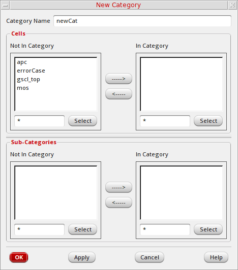

Creating a Category Using Library Manager
You can create a new category using the Library Manager and customize it according to your choice.
- Select a library.
-
Choose File – New – Category.
The New Category form is displayed. -
In the Category Name field, type the name of the new category.
Category names must be unique and legal in the namespace where you are working. -
In the Cells group box, in the Not In Category list box, select the cells you want to include in this category.
You can useShift-click andControl-click to modify your selection set.
Use the field to the left of the Select button to type a filter string. For example, if you typebuf*and click Select, all cells that start with buf are selected. -
Click the right arrow to move them to the In Category list box.
If an error message stating that the software cannot open or cannot write to the category appears, make sure you have write permission for the category files. -
Click OK.
If your library is under design management, the Auto Check In form appears. You can click OK to check in the new category.
The New Category form closes and the new category appears in the Library Manager. If this is the first category you are creating in your library, the Everything and Uncategorized categories are also created.
Related Topics
Return to top